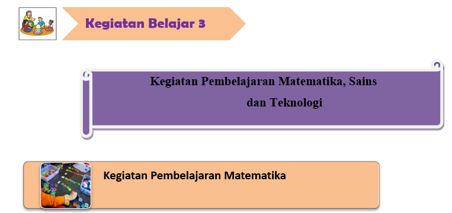
Kegiatan pembelajaran matematika Anak usia dini dapat dikelompokan menjadi 2 bagian utama yaitu kegiatan pembelajaran pra matematika dan pembelajaran matematika, yang termasuk ruang lingkup pra matematika adalah:
KORESPONDENSI SATU-SATU
Ketika terlibat dalam korespondensi satu-ke-satu, anak-anak berpasangan dan mempelajari konsep-konsep dasar tentang bagaimana segala sesuatu sama atau berbeda. Pada usia dini, pemasangan dibuat berdasarkan atribut tunggal yang melekat pada objek (misalnya bentuk atau warna), dan objek disusun dalam berbagai tumpukan atau dalam urutan linear berantai. Keterampilan ini harus dikembangkan sebelum pengelompokan, penyortiran, dan klasifikasi dapat dilakukan. Korespondensi satu-ke-satu dan keterampilan lain yang disajikan dalam unit ini tidak dapat dikembangkan secara terpisah dari konten. Berikut contoh korespondensi satu-satu yang dikaitkan dengan konten sains:
- Dalam kegiatan mencocokkan, anak-anak harus memotong rumah dan menempelkannya di kotak di sebelah hewan yang tinggal di sana. Sebagai contoh, seekor lebah hidup dalam sarang lebah, seekor kuda di gudang, seekor semut di sarang semut, seekor burung di dalam sarang, seekor ikan di akuarium, dan seorang anak di rumah manusia (Gambar 16–2). Tanyakan, “Mengapa semut hidup di tanah?” Tekankan bahwa hewan mencoba hidup di tempat yang menawarkan perlindungan terbaik atau sumber makanan. Diskusikan bagaimana masing-masing hewan cocok dengan rumahnya.
- Penghitung efektif dalam memperkuat konsep dasar korespondensi satu-ke-satu. Misalnya, ketika anak-anak belajar tentang beruang, buat dan gunakan penghitung beruang yang bisa dimasukkan ke dalam gua beruang kecil. Ketika anak-anak mencocokkan masing-masing beruang dengan guanya, mereka memahami bahwa ada jumlah beruang yang sama dengan ada gua. Pimpin anak-anak dalam berspekulasi mengapa beruang dapat berlindung di gua-gua (nyaman, tidak akan terganggu, sulit ditemukan, tempat yang baik untuk bayi beruang dilahirkan, dll.).
- Anak-anak senang bekerja dengan bentuk yang diraba. Potong bebek, beruang, kolam, dan gua dengan ukuran berbeda untuk anak-anak agar serasi dengan papan flanel. Jika anak-anak memiliki bahan-bahan yang tersedia, mereka akan cenderung memainkan permainan pencocokan binatang sendiri, seperti "mencocokkan bayi dan hewan dewasa" atau "membariskan semua bebek, dan menemukan kolam untuk masing-masing." membandingkan bayi itik dengan itik dewasa dengan bertanya: "Dalam hal apa bayi terlihat seperti orang tua mereka?" "Bagaimana mereka sama?" "Bisakah Kamu menemukan perbedaan?"
MEMBANDINGKAN
Ketika anak-anak kecil membandingkan, mereka melihat persamaan dan perbedaan dengan masing-masing indra mereka. Anak-anak dapat mendeteksi titik kecil perbedaan, oleh karena itu, menikmati kesalahan melihat dan menemukan perbedaan antara objek. Kegiatan seperti mengamati penampilan dan ukuran, grafik, dan berpakaian tokoh memberi pengalaman dalam membandingkan.
-
Bandingkan penampilan dengan mendiskusikan kesamaan antara saudara, boneka, atau hewan favorit.
-
Perbandingan ukuran tampaknya memikat anak kecil. Mereka ingin tahu siapa yang terbesar, tertinggi, dan terpendek.
-
Bandingkan panjang tangan, bentang dan lengan bentang dan panjang langkah dan anggota badan. Siapkan beberapa fakta.
-
Anak-anak akan ingin tahu binatang mana yang terbesar, terkecil, berlari tercepat, dan sebagainya. Mereka bahkan mungkin memutuskan untuk menguji handuk kertas mana yang paling kuat atau keripik kentang mana yang paling asin.
Persamaan dan perbedaan menemukan kesamaan, konsep, atau karakteristik yang menghubungkan berbagai hal mungkin lebih sulit daripada mengidentifikasi perbedaan dalam objek. Misalnya, anjing, kucing, beruang, kadal, dan tikus semuanya adalah binatang. Tetapi untuk mendapatkan pemahaman tentang konsep-konsep ini, anak-anak perlu mengembangkan gagasan bahwa beberapa kesamaan lebih penting dari pada yang lain. Perbandingan dapat membantu anak-anak menjadi lebih sadar akan lingkungan mereka. Berikut ini beberapa contohnya. Berjalan-jalan, dan mintalah anak-anak mengamati pohon yang berbeda. Minta mereka untuk membandingkan bentuk umum pohon dan daunnya. Biarkan mereka merasakan kulit kayu dan gambarkan perbedaan antara kulit kayu yang kasar atau halus, mengelupas, dan tipis atau tebal.
KLASIFIKASI
Set/ klasifikasi adalah sekelompok hal dengan fitur-fitur umum yang disatukan oleh proses klasifikasi. Anak-anak mengklasifikasikan ketika mereka mengurutkan (memisahkan) dan mengelompokkan (bergabung) hal-hal yang menjadi bagian bersama karena suatu alasan. Meskipun klasifikasi memerlukan pengelompokan oleh lebih dari satu karakteristik dan biasanya terjadi ketika anak-anak lebih tua, pada anak-anak kecil proses pengelompokan sederhana biasanya disebut klasifikasi. Kegiatan klasifikasi berikut mengembangkan pemikiran analitis dan mendorong ekspresi pemikiran yang jelas dalam berbagai pengaturan.
- Salah satu cara untuk mendorong klasifikasi informal adalah dengan menyimpan kotak tombol. Anak-anak akan mengurutkan tombol ke dalam set mereka sendiri. Tanyakan, "Bagaimana ini berjalan bersama?" Biarkan anak-anak menjelaskan.
- Anak TK dapat mengklasifikasikan hewan menjadi mamalia, reptil, dan amfibi berdasarkan penutup tubuhnya. Berikan mereka dengan gambar, hewan plastik, atau bahan yang mensimulasikan penutup tubuh hewan.
- Anak-anak dapat mengklasifikasikan warna dengan camilan terkoordinasi warna. Saat anak-anak membawa makanan ringan, bantu mereka mengklasifikasikan makanan berdasarkan warna.
Kegiatan yang tergolong metematika anak usia dini adalah
1. Konsep angka
Menurut NCTM dalam Utoyo (2017: 32-33), Konsep angka adalah kemampuan dasar di bidang matematika. Kemampuan ini berkembang secara bertahap dimulai dari kemampuan anak dalam mengeksplorasi dan memanipulasi obek dan selanjutnya diikuti dengan kemampuan anak dalam mengorganisasikannya dengan lingkungannya melalui logika
matematika. Mulainya konsep angka melibatkan pemikiran tentang “berapa jumlahnya atau berapa banyak” termasuk menghitung, menjumlahkan satu tambah satu. Menghitung merupakan cara belajar mengenai nama angka, kemudian menggunakan angka tersebut untuk mengidentifikasi jumlah benda (Sujiono dalam Setiawan dan Khamah, 2018).
Anak-anak menggunakan angka melalui kegiatan seperti menghitung benda-benda yang nyata, seperti menghitung jumlah bunga yang ada pada gambar dinding atau jumlah pensil yang ada di atas meja guru dan membuat lingkaran dengan titik (satu hingga delapan) untuk menggantung di pengait. Mintalah anak-anak untuk menghitung jumlah. Setelah anak terbiasa mengghitung jumlah benda yang nyata, kemudian guru menghubungkan benda yang nayta dengan angka. Misalnya melalui kegiatan lain adalah menciptakan kumpulan dengan jumlah objek yang telah ditentukan guru seperti kegiatan berikut ini. Guru meminta anak untuk membuat kumpulan 3 balok dengan memperlihatkan angka 3, atau membuat sebuah bangunan dengan menggunakan 6 balok dengan memperlihatkan angka 6. Kegiatan lain yang bisa dilakukan dalam mengenalkan konsep angka adalah mengurutkan angka sesuai dengan banyaknya jumah benda yang dihitung, kemudian urutkan dari jumlah palig sedikt samapai benda dengan jumlah paling banyak. Setelah itu anak diminta untuk mengurutkan angka dari jumlah benda tersebut misalnya ada kumpulan 2 bintang, 3 bintang, dan 4 bintang. Guru meminta anak untuk mengurutkan angka sesuai dengan jumlah benda.
Menekankan konten sains sambil mempelajari konsep angka memungkinkan anak-anak untuk menghubungkan mata pelajaran ini dengan kehidupan sehari-hari mereka dan dengan contoh konkret. Misalnya: Siapkan ikan kertas konstruksi, peti harta karun, batu, dan tanaman, dan tempelkan pada persegi panjang 12 "20" yang terbuat dari papan poster berwarna biru muda. Tempelkan beberapa ikan, peti harta karun, batu, dan tanaman dengan latar belakang biru. Kemudian, dengan menggunakan paku payung, pasanglah kotak plastik bening berukuran 13 "21" di bagian atas tag kayu ek biru muda untuk membuat papan buletin tangki ikan. Sebelum para siswa tiba di hari berikutnya, letakkan lebih banyak ikan di dalam tangki. Kemudian tanyakan, “Berapa banyak ikan yang berenang di dalam tangki?” Setiap hari, tambahkan lebih banyak ikan dan tanyakan kepada kelas: “Berapa banyak ikan yang berenang di dalam tangki hari ini?” “Berapa banyak yang berenang di dalam tangki kemarin?” “Apakah ada lebih banyak ikan berenang di tangki hari ini, atau kemarin?
Anak-anak suka berhitung, mereka menghitung secara informal dan dengan arahan dari guru. Menghitung tidak dapat dihapus dari konteks — Kamu harus menghitung sesuatu. Saat anak-anak berhitung, tekankan ilmu yang mereka hitung. Jika anak-anak menghitung jumlah bayi itik setelah bebek dewasa, pimpin anak-anak untuk berspekulasi kemana bebek itu akan pergi dan apa yang mungkin mereka lakukan.
2. Konsep geometri
Geometri berkaitan dengan mengenal dan memahami sesuatu yang berkonsep ukuran, bentuk kedudukan dan ruang. Seperti pada kegiatan inti, pembelajaran diisi dengan mengelompokkan geometri sesuai dengan bentuk dan warna. Anak-anak memberikan warna padasetiap bentuk sesuai dengan jenis kelompok warnanya. Bentuk geometri yang digunakan adalah segi tiga, lingkaran dan segi empat (Saputri : 964). Tahapan anak belajar geometri, yaitu sebagai berikut (Safirna, 2014: 10).
- Tahap Pengenalan. Pada tahap ini siswa sudah mengenal bentuk- bentuk geometri, seperti segitiga, kubus, bola, lingkaran, dan lian-lain, tetapi ia belum memehami sifat- sifatnya.
- Tahap Analisis. Pada tahap ini, siswa sudah dapat memahami sifat- sifat konsep atau bentuk geometri. Misalnya, siswa mengetahui dan mengenal bahwa sisi panjang yang berhadapan itu sama panjang, bahwa panjang kedua diagonalnya sama panjang dan memotong satu sama lain sama panjang dan lain-lain.
- Tahap Pengurutan. Pada tahap ini, siswa sudah dapat mengenal bentuk- bentuk geometri dan memahami sifat- sifat dan ia sudah dapat mengurutkan bentuk- bentuk geometri yang satu sama lain berhubungan.
- Tahap Dedukasi. Pada tahap ini, berpikir deduktifnya sudah mulai tumbuh, tetapi belum berkembang dengan baik. Matematika adalah ilmu deduktif, karena pengambilan kesimpulan, pembuktian dalil yang harus dilakukan secara deduktif. Pada tahap ini, siswa sudah dapat memahami pentingnya pengambilan kesimpulan secara deduktif itu, karena misalnya ia dapat melihat bahwa kesimpulan yang diambil secara induktif itu mungkin bisa keliru.
- Tahap Keakuratan (Ringor). Pada tahap ini, siswa dapat memahami bahwa adanya ketepatan (presisi) dari yang mendasar itu penting.
Jenis-jenis geometri secara umum yaitu geometri dua dimensi biasa disebut juga bangun datar dan geometri tiga dimensi yang biasa disebut bangun ruang. Geometri dua dimensi (bangun datar) adalah bangun yang mempunyai sisi dan sudut (Ningsih, 2016) diantaranya: Segitiga adalah bangun yang memiliki tiga sisi, Jajar Genjang adalah suatu segi empat yang sisi-sisinya sepasang sejajar, Persegi Panjang adalah jajar genjang yang suatu
sudutnya sikusiku, Segi Empat adalah suatu jajar genjang yang dua sisinya berurutan sama panjang, Trapesium adalah suatu segi empat yang memiliki tepat sepasang sisi yang sejajar, dan Lingkaran adalah garis lengkung yang bertemu kedua ujungnya yang merupakan himpunan titik-titik yang berjarak dari titik tertentu.
Cara memperkenalkan berbagai bentuk geometri pada anak usia dini adalah dengan contoh menunjukkan bentuk bangun datar yang ada di lingkungan anak. dalam mengenalkan bentuk geometri pada anak bisa melalui bermacam-macam benda yang ada di sekitar anak atau benda-benda yang sering dijumpai oleh anak. Jika lingkungan terdekat dengan anak kurang mendukung dalam memperoleh bentuk geometri maka bisa dengan menggunakan media pembelajaran (Ningsih, 2016). Apabila pembelajaran dilakukan menggunakan media pembelajaran, maka akan lebih menarik rasa keingintahuan anak, karena media pembelajaran pada anak usia dini sangat diperlukan saat mengajar, sehingga dengan media maka anak akan lebih tertantang dan menambah minat ketika anak belajar.
Anak-anak menuangkan dunia fisik dengan ide geometri bidang datar (2 dimensi) kemudian menggambarkannya dengan kosa kata yang terkait, dan menggambarkan berbagai wujud, seperti persegi, segitiga, lingkaran, dan persegi panjang yang disajikan dengan ukuran dan cara yang berbeda-beda. Sebuah kegiatan yang baik untuk menemukan aturan dalam bentuk geometris bidang datar adalah dengan membuat sebuah papan paku. Paku-paku kecil dipasangkan pada sebuah papan ukuran 40 cm x 40 cm, kemudian dengan menggunakan karet, anak-anak membentuk berbagai bentuk geometri seperti segitiga, persegi, maupun persegi panjang.
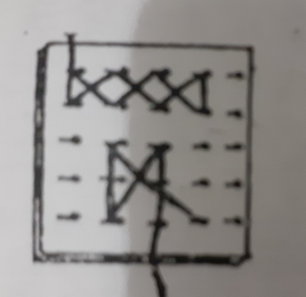
Gambar Papan Paku Geometri
Anak-anak dapat diajak untuk mengenal geometri ruang (3 dimensi) dengan terlebih dahulu menstimulasi visual spasial mereka. Contohnya, mereka membalikkan benda, melangkah mundur, dan maju sepuluh langkah, belok kanan,dan belok kiri. Setelah itu perkenalkan benda geometri ruang seperti tabung, balok, bola, dan kubus. Buatlah permainan dengan menggunakan benda-benda tersebut. Meskipun anak-anak kecil belum siap untuk berpikir abstrak tingkat formal, mereka dapat mulai berpikir tentang ruang dan bentuk hubungan. Permainan papan sains berikut yang dimainkan di ruang kelas dasar adalah contoh yang baik. "Letakkan bintang laut di atas batu besar." "Batu mana yang kamu maksud?" "Yang abu-abu besar di sebelah peti harta karun yang tenggelam." Ini adalah percakapan dua anak yang sedang bermain.
Perkembangan geometri yang harus dikembangkan pada anak usia dini antara lain dengan cara yang paling sederhaan ke yang kompleks (Saputri, 2016): (1) Memilih benda menurut warna, bentuk, dan ukurannya. (2) Mencocokkan benda menurut warna, bentuk, dan ukurannya. (3) Membandingkan benda menurut ukuran besar, kecil, panjang, lebar, tinggi, dan rendahnya. (4) Mengukur benda secara sederhana. (5) Mengerti dan menggunakan bahasa ukuran, seperti besar-kecil, (6) tinggi-rendah, dan panjang-pendek. (7) Menciptakan bentuk dari kepingan geometri. (8) Menyebut benda-benda yang ada di sekitarnya sesuai dengan bentuk geometri. (9) Mencontoh bentuk-bentuk geometri. Maka mengenal bentuk geometri bagi anak usia dini adalah proses pengenalan bentuk, warna, dan ukuran geometri dalam menunjukkan, memilih, menyebutkan dan membedakan, mengelompokkan bentuk-bentuk geometri seperti lingkaran, segi empat dan segitiga sesuai dengan warna, bentuk, dan ukuran geometri. Dan anak untuk dapat memilih, menyebutkan, dan mengelompokan bentuk-bentuk geometri seperti lingkaran, persegi panjang, persegi empat, segitiga.
3. Pengukuran
Anak-anak menggunakan atribut yang dapat diukur, untuk memecahkan masalah dengan membandingkan dan mengurutkan panjang dua objek secara langsung (dengan membandingkan tidak langsung (dengan membandingkannya dengan urut sesuai dengan panjangnya. Contohnya, anak-anak membandingkan panjang meja anak dengan meja guru. Anak mengkur panjang meja guru menggunakan jengkal, kemudian mengukur meja anak menggunakan jengkal. Kemudian guru dapat memberikan pertanyaan, meja siapa yang lebih panjang? Pengukuran juga bisa dilakukan dengan menemukan angka dari sebuah unit standar dari sebuah objek. Misalnya anak menimbang buah dengan menggunakan timbangan meja. Angka yang tertera pada timbangan menunjukkan berat buah yang sedang diukur.
Gambar buah yang sedang ditimbang
4. Pola
Pola menurut Lestari (2011) merupakan susunan benda yang terdiri atas warna, bentuk, jumlah, atau peristiwa. Untuk mengembangkan kemampuan mengenal pola dan hubungan, anak perlu diberi banyak kesempatan untuk menggali dan memanipulasi benda dan mencatat persamaan dan perbedaanya. Patterning (menyusun pola atau gambar) adalah menyusun rangkaian warna, bagian-bagian, benda-benda, suara-suara, dan gerakan-gerakan yang dapat diulang. Keterampilan ini sangat penting memperluas pengetahuan anak tentang persamaan dan perbedaan (Sujiono dalam Setiawan dan Khamah, 2018).
Konsep pola akan mengiring anak untuk terbiasa melakukan perkiraan dengan memeperkirakan benda apa yang akan diurutkan sesuai pola yang telah ada. Pola juga melatih anak untuk melakukan pengulangan. Pola merupakan susunan benda yang terdiri atas warna, bentuk, jumlah, atau peristiwa. Contoh susunan pola berdasarkan ukuran yaitu besar, kecil. Susunan pola berdasarkan warna yaitu kuning, hijau, kuning, hijau. Susunan pola berdasarkan peristiwa sehari-hari yaitu sesudah makan nasi, saya minum air putih.
Untuk mengembangkan kemampuan mengenal pola dan hubungan, anak perlu diberi banyak kesempatan untuk mengenali dan memanipulasi benda serta mencatat persamaan dan perbedaannya. Beberapa contoh kegiatan yang bisa dilakukan orang tua untuk mengembangkan pola dan hubungan pada anak diantaranya adalah mengajak anak bermain menyusun antrian mobil-mobilan membentuk pola barisan hijau, biru, hijau, biru, hijau, biru, hijau, biru.
Mempelajari pola dapat membantu anak untuk melihat dan menemukan pola hubungan, membuat generalisasi, dan prediksi. Terdapat beberapa jenis pola, yaitu:
- Pola berulang misalnya AB-AB-AB, AAB-AAB-AAB, ABC-ABC-ABC, dan seterusnya.
- Pola yang berkembang AB-ABB-ABBB-ABBBB.
- Pola hubungan, misalnya satu anak memiliki dua mata, dua anak ada empat mata, dst.
- Pola simetris
Terdapat bermacam-macam jenis pola, misalnya pola AA AA. Pola AA AA digunakan dalam kegiatan membuat stempel dari batang keladi, atau bongkol pisang. Pola AA juga bisa digunakan dalam membuat gambar bunga dari satu helai pola kelopak bunga
Gambar pola AA AA
Anak juga bisa diperkenalkan dengan pola AB AB atau pola ABC, ABC atau pola ABCD ABCD sesuai dengan usia perkembangan anak. Pola AB AB bisa dikenalkan dengan kegiatan
membuata gelang dari manik-manik, sedangkan pola ABC ABC dan pola ABCD ABCD dapat diterapkan dengan membuat hiasan jendela.
Gambar pola AB AB
Gambar pola ABC ABC
Gambar pola ABCD ABCD
Macam-macam Pembelajaran Pola pada Anak Usia Dini
- Pola Bilangan, pola bilangan merupakan urutan bilangan dengan jarak dan urutan yang konstan. Pola bilangan juga dapat disebut dengan pengulangan dari pola sebelumnya. Misalnya guru menyajikan urutan bilangan 1,2,3 maka anak harus mengulangi pola tersebut dengan sama persis beberapa kali. Selain itu guru juga dapat mengajarkan berbagai macam bilangan misalnya bilangan ganjil, bilangan genap, bilangan bulat, dan lain-lain.
- Pola Bentuk, setelah anak mengenal bentuk dari suatu benda, guru dapat meminta anak untuk menurutkan bentuk benda sesuai dengan urutan sebelumnya. Kegiatan ini dapat dilakukan dengan mengurutkan bentuk matahari, bulan, bintang, dan awan. Selain itu juga dapat mengurutkan bentuk mtematika misalnya persegi, segitiga, lingkaran, trapesium, dan lain-lain. Anak dapat memulainya dari benda mana saja, dan diulang sesuai dengan pola yang telah ditentukan anak sebelumnya.
- Pola Warna, untuk mengenalkan pola warna pada anak, guru dapat menggunakan tiga atau empat macam warna terlebih dahulu supaya anak tidak kebingungan untuk membuat pola berikutnya. Anak dapat disajikan dengan warna yang mencolok dalam bentuk yang sama setiap warnanya. Agar pembelajarannya menarik guru dapat mengenalkan warna dengan berbagai macam bentuk.
- Pola Fungsi, setiap benda mempunyai bentuk yang berbeda-beda, sekalipun sama macamnya. Sebagai contoh bentuk dari mobil balap beda dengan mobil transportasi yang sehari-hari dapat di jumpai oleh anak-anak, hal itu berkaitan dengan fungsi dari masing-masing mobil. Mobil balap harus memiliki keaeodinamisan yang tinggi dibanding dengan mobil box atau mobil transportasi biasa, maka mobil balap harus lebih tipis dan ramping dibanding jenis mobil lainnya.
-
Grafik, Menggambar grafik merupakan salah satu cara mengkombinasikan perhitungan dengan pengukuran. Sebuah kalender mingguan tentang data kehadiran anak laki-laki dan anak perempuan dapat dijadikan grafik, begitu juga jumlah anak yang memakai warna baju tertentu dalam kegiatan darmaisata juga dapat dibuatkan grafik
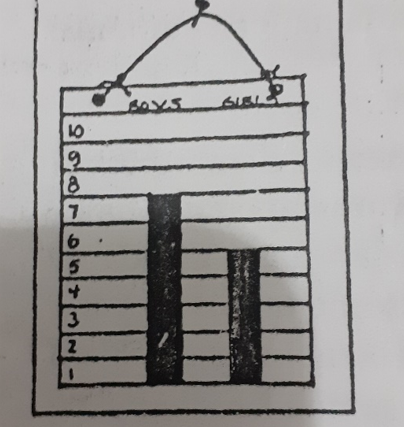
Gambar Grafik Jumlah Anak Perempuan dan Anak Laki-Laki
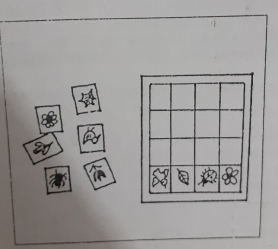
Gambar. Menyusun Potongan Card Bagian Tanaman Membentuk Grafik
Memadukan matematika dengan pusat kegiatan / sentra yang lain
Kegiatan di sebuah pusat kegiatan/sentra di kelas anak-anak usia dini dapat memberikan pengalaman mempelajari matematika:
-
Pusat Drama Peran
Hubungan satu-satu dapat dikuatkan dalam rumahan, contohnya, boneka-boneka terhadap selimut atau gelas terhadap teko. Permainan sebagai penjual dan pembeli juga dapat merangsang kemampuan berhitung anak. Misalnya dalam bermain “toko-toko" anak-anak mengitung beda yang akan dibeli, anak –anak juga akan memperkirakan berapa uang yang habis jika dia mengguankan semua uangnya untuk membeli sesuatu.
-
Pusat Literatur
Sebaiknya tersedia dalam jumlah yang cukup banyak gambar dengan angka-angka yang jelas dan menarik untuk dihitung. Bisa ditempel di dinding, bisa juga dengan menyediakan buku angka.
-
Meja Pasir dan air
Mengisi dan mengosongkan variasi bermacam ukuran benda, seperti berapa gelas air yang dibutuhkan untuk mebuata sebuah botol plastik ukuran 1 L penuh. Atau bisa juga digunakan untuk memghitung jumlah kotak pasir yang dibutuhkan untuk memenuhi satu buah container dari sebuah truk mainan.
-
Pusat Seni
Pusat Kegiatan-kegiatan seni dapat digunakan untuk peluang menguatkan kembali hubungan satu-satu, contohnya, kuas dengan warna kucing atau kertas dengan jumlah anak yang sedang digunakan perkenalkan anak dengan kalkulasi, contohnya, setiap anak menggunakan tiga krayon: tanyakan, “Berapa jumlah krayon yang sedang digunakan”? Merancang tugas-tugas bisa termasuk geometri melalui penggunaan bentuk-bentuk dan pola-pola.
-
Pusat permainan balok
Seperangkat balok kayu dapat dibeli denagn alat-alat pertukangan. Anak-anak dapat mengembangkan konsep geometri ruang. Dapat diberikan kepada anak sehingga anak dapat lepas melakukan peneitian.
Permainanan Matematika Yang Sesuai Dengan Usia Anak
Pada bayi (0-6 bulan) :
- Sambil memakaikan kaos kaki pada bayi, tersenyum pada bayi dan mengucapkan “Nah ini satu kaos kaki untuk kaki kiri, dan satu lagi untuk kaki kanan. Dua kaos kaki untuk dua kaki”.
- Saat akan menyuapkan biskuit yang dihaluskan, sambil tersenyum ke bayi kita ucapkan” Sekarang waktu nya makan biskluit ya”. Dan ketika bayi terlihat senang, maka kita bisa ucapkan “Kamu mau tambah biskuitnya. Kamu pasti lapar ya.”
Pada bayi (6-12 bulan):
- Sediakan wadah-wadah mainan dan letakan masing-masing penutup didekatnya. Ajaklah bayi untuk meletakan tutup pada setiap wadah mainan
- Letakan 2 buah mainan di hadapan bayi. Ajaklah bayi untuk memilih mainan yang akan dimainkan dan meraih mainan tersebut.
Pada anak usia 12-24 bulan:
- Ajaklah anak bernyanyi lagu Satu Satu atau lagu balonku, yang mengandung konsep bilangan sambil bergerak mengikuti irama.
- Mintalah anak untuk memasukan bola plastik ke keranjang, kemudian ajaklah anak untuk menghitung bersama-sama jumlah bola yang ada di keranjang.
Pada anak usia 24-36 bulan:
- Siapkan beberapa buah mainan mobil-mobilan. Ajaklah anak untuk menyusun barisan antrian mobil.
- Ajukan anak dengan pertanyaan seperti, “berapa umurmu sekarang?” ketika anak menjawab ‘dua’ maka tunjukan dengan dua jari sambil mengucapkan “dua”.
Ajaklah anak untuk bersma-sama Permainan matematika untuk anak Usia 30 hingga 36 bulan
Letter Fishing
Bahan:
- Kartu bisnis lama, buat berbagai macam bentuk geometri
- Klip kertas
- Box String
- Magnet
3. Bermain menumpuk beberapa balok atau kardus. Ketika selesai Tanyakan pada anak, “Bangunan siapa yang lebih tinggi?”. Biarkan anak berkata “Punyaku yang lebih tinggi”. Kemudian mintalah anak untuk menghitung balok atau kardus yang sudah ditumpuknya.
4. Menyediakan balok-balok lunak atau kardus-kardus bekas obat dari berbagai ukuran agar anak bisa bereksplorasi dan membangun. Anak belajar mengenal bentuk-bentuk sederhana seperti tabung atau balok.
Kegiatan :
- Tulis huruf, angka, atau bentuk di satu sisi setiap kartu bisnis.
- Pasang klip kertas ke bagian atas kartu.
- Masukkan kartu ke dalam kotak besar, menghadap ke atas.
- Buat pancing dari tali dan magnet. Sebutkan surat, angka, atau bentuk geometri dan minta anak Anda memancingnya.
Mengembangkan Konsep Angka Pada Anak Usia 3-5 Tahun
Ketika orang tua meminta anak mengambilkan 3 buah biskuit, dan anak membawa 3 buah biskuit. Anak tersebut mengerti tentang konsep jumlah. Anak yang paham urutan angka, akan tahu bahwa kalau menghitung 3 biskuit dari kiri ke kanan dan dari kanan ke kiri maka jumlahnya akan sama. Anak yang paham konsep perbandingan akan paham benda yang lebih besar, jumlahnya lebih banyak, lebih sedikit, atau sama. Beberapa contoh kegiatan yang dapat dilakukan orang tua dalam mengembangkan konsep angka menurut Lestari (2011), yaitu:
- Meminta anak menghitung jumlah cangkir yang diperlukan untuk mengisi botol sampai penuh dengan pasir.
- Meminta anak menghitung jumlah cangkir yang diperlukan untuk membuat bangunan yang dibuat anak.
Pembelajaran/Permainan matematika usia 5-6 tahun
Dapat menggunakan pembelajaran matematika realistic. Agar lingkungan belajar menjadi menyenangkan dan dapat memberikan kesempatan anak untuk terlibat didalamnya maka harus memperhatikan langkah-langkah dalam pembelajaran matematik realistik. Secara umum langkah-langkah pembelajaran matematika realistik dapat dijelaskan sebagai berikut (Aisyah:2007): (a) Persiapan, selain menyiapkan masalah kontektual, guru harus benar-benar memahami masalah dan memiliki berbagai macam strategi yang mungkin akan ditempuh anak dalam menyelesaikannya, (b) Pembukaan, pada bagian ini anak diperkenalkan dengan strategi pembelajaran yang dipakai dan diperkenalkan kepada masalah dari dunia nyata. Kemudian anak diminta untuk memecahkan masalah tersebut dengan cara mereka sendiri, (c) Proses, pembelajaran anak mencoba berbagai strategi untuk menyelesaikan masalah sesuai dengan pengalamannya, dapat dilakukan secara perorangan maupun secara kelompok. Guru mengamati jalannya pembelajaran di kelas dan memberi tanggapan sambil mengarakan anak untuk mendapatkan strategi serta menemukan aturan atau pronsip yang bersifat lebih umum, (d) Penutup, Setelah mencapai kesepakatan tentang strategi terbaik melalui diskusi kelas, anak diajak menarik kesimpulan dari pembelajaran saat itu.
Berdasarkan langkah-langkah pembelajaran matematika realistik diatas yaitu persiapan, pembukaan, proses pembelajaran dan penutup dapat dijelaskan pada tahap persiapan, guru dapat mempersiapkan masalah kontektual dan benar-benar memahami masalah serta memiliki berbagai macam strategi. Pembukaan, pada bagian ini anak diperkenalkan pada masalah dari dunia nyata kemudian siswa tersebut diminta untuk menyelesaikan masalah tersebut dengan cara dan kemampuan anak tersebut. Guru menfasilitasi dengan media-media konkret untuk memecahkan suatu masalah. Anak mencoba berbagai strategi yang sesuai dengan pengalamannya dan media realistik yang disediakan oleh guru. Hal ini dapat dilakukan secara perorangan atau berkelompok. Kemudian setiap anak atau kelompok mempersentasikan hasil kerjaannya kedepan dan anak atau kelompok yang lain memberikan tanggapan terhadap hasil kerja anak atau kelompok penyaji. Pada kegiatan penutup, setelah mendapatkan kesepakatan tentang pemecahan masalah yang diberikan melalui diskusi tersebut, anak dapat menarik kesimpulan dari pelajaran saat itu.
Permainan matematika untuk anak usia 5-6 tahun lainnya adalah dengan menggunakan media buzzy book. Media merupakanalat yang dapat menyampaikan pesan dalam proses belajar mengajar sehingga dapat merangsang pikiran, perasaan, dan minat
belajar siswa.Media busy book dapat menarik perhatian dan meningkatkan minat belajar anak dalam berhitung. Media busy book merupakan media pembelajaran yang interkatif terbuat dari kain flannel berwarna-warna cerah. Media busy book dapat dibuat sesuai dengan kebutuhan dari proses pembelajaran yang akan dikenalkan kepada anak, seperti pengenalan berhitung kepada anak. Media busy book dapat menstimulasi kemampuan berhitung anak seperti mengurutkan lambing bilangan, mencocokan benda dengan lambing bilangan dan konsep jumlah yang sama dan tidak sama. Melalui media busy book anak akan menemukan permainan-permainan unik yang menyenangkan di setiap halamannya sehingga dapat meningkatkan kemampuan berhitung anak.
Menurut Gaity (2014:18-19) Busy book berisikan tentang aktivitas sehari-hari. Selain membuat anak sibuk dengan aktivitas yang positif, juga pengenalan pelajaran mandiri sejak dini. Di dalam busy book, anak akan menemukan permainan-permainan unik yang menyenangkan yang akan mengasah kognitifnya. Menurut Mufliharsi (2017:150) Busy Book merupakan media yang efektif untuk mengajarkan kosakata sederhana secara menarik antara lain: color, animals, numbers, dan shape.
Menurut Mufliharsi (2017:150), pembelajaran dengan menggunakan busy book memiliki beberapa keunggulan, yakni: 1) Guru mudah menentukan materi ajar, tinggal disesuaikan dengan perintah yang disesuaikan dengan konten yang ada di dalam busy book, 2) Guru dapat dengan mudah mengevaluasi siswa karena dengan sendirinya aktivitas yang terdapat di dalam buku dapat mengeksplorasi kemampuan masing masing siswa, 3) Siswa tanpa diminta, melakukan aktivitas yang dituntut dilakukan di dalam busy book, 4) Akan timbul rasa ingin tau dari para siswa dan cenderung langsung melakukan sendiri tanpa pertolongan dari guru, 5) sifat media tahan lama karena terbuat dari kain sehingga tidak gampang kotor, kusut, maupun robek, 6) pembelajaran di kelas menjadi menyenangkan dan aktif, 7) Pembelajaran menjadi menyenangkan karena banyak warna, banyak aktivitas, dan memancing kreativitas siswa untuk melakukan aktivitas yang ada menjadi lebih baik dan sistematis.
Kemampuan berhitung anak usia TK adalah merupakan kemampuan dalam memahami konsep dasar-dasar matematika atau berhitung permulaan mengenai bilangan, angka dan pengoperasiannya yang diberikan pada anak sesuai dengan tahap-tahap
perkembangan anak. Sehingga media busy book menjadi salah satu media yang berpengaruh dalam meningkatkan kemampuan berhitung anak.
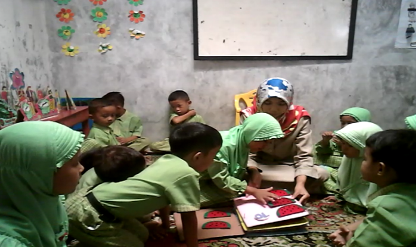
Gambar 23. Anak menghitung jumlah biji semangka dengan media Busy book
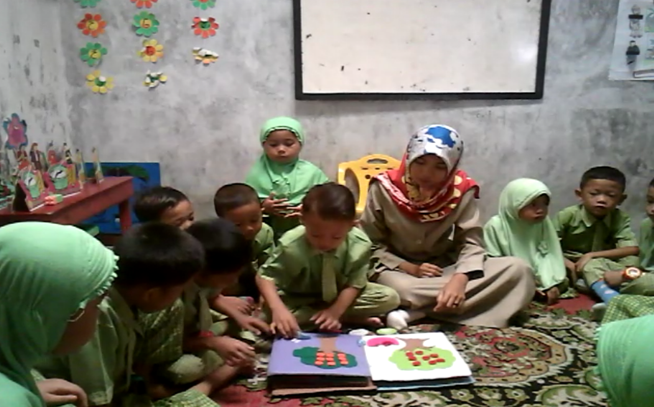
Gambar 23. Anak menunjukkan jumlah benda yang sama dengan media busy book
Kegiatan
Alat peraga juga disebut dengan media, untuk mengembangkan kemampuan berhitung anak harus menggunakan media yang menarik dan menyenangkan bagi anak, salah satunya media strip board.
Strip board adalah alat peraga yang dirancang oleh Dr. Maria Montessori yang terbuat dari papan triplek yang diberi tulisan angka pada setiap kotak dan memiliki strip berwarna merah dan biru. Dengan ukur strip warna merah dan biru adalah 3cm x 3cm sedangkan papannya berukuran 60cm x 35cm dibagian atas papan ditulis angka 1-20 dimana untuk angka 1-10 ditulis dengan warna hitam dan angka 11-20 ditulis dengan warna merah.
Penelitian ini menggunakan strip board di kelas (B2) Taman Kanak-kanak Anggrek Padang, semua anak terlihat antusias, senang, dan bersemangat untuk mencobanya karena pembelajaran berhitung menggunakan media strip board ini terbilang baru bagi anak terutama pada Taman Kanak-kanak Anggrek Padang. Guru Taman Kanak-kanak Anggrek jarang membuat media pembelajaran. Guru disana hanya menggunakan papan tulisan untuk menulis angka atau belajar berhitung kepada anak yang bersifat abstrak tanpa dikombinasikan dengan media. Melalui media strip board ini mampu membuat konsep matematika yang abstrak menjadi lebih konkrit.
Sedangkan di kelas kontrol yang menggunakan media kartu bergambar, hanya sebagian saja yang memperhatikan guru mengajar dan yang lainnya ada yang bermain, mengobrol dengan teman, dan ada yang berjalan-jalan di dalam kelas. Hal ini terjadi karena anak telah bosan menggunakan kartu bergambar untuk kegiatan belajar berhitung.
Selain itu, guru meminta anak menghitung gambar bintang yang ada di kartu bergambar, ketika anak diminta menghitung gambar yang ada dikartu masih ada anak yang menghitung tidak sesuai dengan urutan gambar dan menyebabkan hasil yang dihitung anak tidak sesuai dengan jumlah gambar yang ada dikartu dan ketika mencocokan dengan lambang bilangan anak juga akan salah karena ketika berhitung anak menyebutkan jumlahnya strip salah.
Jadi, hasil kemampuan berhitung pada anak di kelas eksperimen lebih baik dari pada hasil kemampuan berhitung pada anak di kelas kontrol, dapat dilihat dari rata-rata anak kelas eksperimen yang lebih tinggi dari pada kelas kontrol. Karena keunggulan dari media strip board adalah media menarik bagi anak dan anak tidak bosan melakukannya serta anak juga berebut untuk melakukan kegiatan berhitung menggunakan media strip
board tersebut. Anak bisa mencocokkan angka menggunakan strip merah dan biru dan anak juga dapat mengetahui strip biru untuk bilangan 1-10 sedangkan strip merah untuk lambang bilangan 11-20 dari warna yang membedakan tersebut anak bisa tahu bahwa anak telah memasuki tahap mengenal lambang bilangan yang lebih tinggi yaitu 11-20.
Kemudian anak bisa melihat hasil akhir benda yang telah disusun apakah sama yang dihitungnya atau tidak dengan cara melihat angka dibagian atas strip board kemudian anak bisa mencocokkan dengan lambang bilangan anak lebih semangat melakukan kegiatan berhitung, serta anak dapat melakukan kegiatan berhitung dengan benda konkrit. Maka dapat disimpulkan bahwa media strip board lebih mempengaruhi kemampuan berhitung pada anak, serta memberi pengetahuan tentang lambang bilangan dan konsep bilangan serta anak dapat berfikir logis melalui pengamatan terhadap benda-benda konkrit.
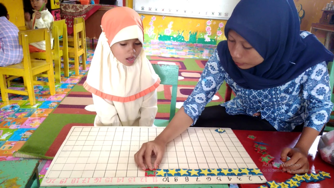
Gambar 25. Anak menyebutkan lambang bilangan 1-20 dengan strip biru dan merah
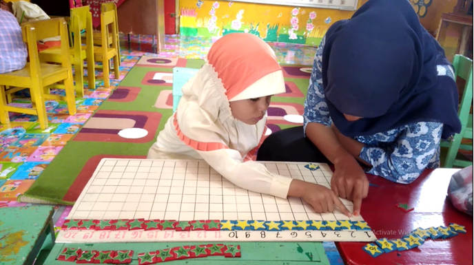
Gambar 26. Anak menghitung jumlah strip biru dan merah
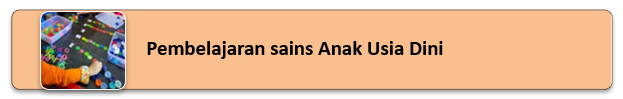
Semangat penyelidikan merupakan pusat ilmu pengetahuan, dan bermain representasional eksplorasi di masa kecil meletakkan dasar untuk penyelidikan ilmiah dewasa (Christoper). Anak mempelajari sains dengan mengeksplorasi dunia yang ada di sekitar mereka( Diane). Saintifik proses merupakan siklus dari membuat hipotesis, mengumpulkan data, konfirmasi atau menolak hipotesis, membuat hipotesis baru dan mengulangi siklus. Keterampilan yang diperlukan dalam saintifik proses menurut Ann Brewer adalah :
- mengamati; Melihat dan mengamati berbeda. Mengamati berarti melihat dengan seksama atas informasi dan tindakan spesifik.
- mengklasifikasi; Agar anak dapat mengklasifikasikan, maka anak harus bisa membandingkan jenis benda atau informasi, anak dapat mengklasifikasikan berdasarkan fungsi, warna, dan bentuk.
- membandingkan; membandingkan sesuatu dengan yang lainnya.
- pengukuran; Pengukuran tidak harus dilakukan dengan alat standar tapi dapat menggunakan skop, sendok atau mengggunakan gelas untuk mengukur benda yang diamati.
- komunikasi; Kemampuan berkomunikasi akan mendorong anak untuk berbagi hasil observasi dan data-data yang telah dikumpulkan. Anak dapat menceritakan penemuannya dengan membuat grafik atau dengan narasi.
- mencoba; Percobaan merupakan bukan hal yang baru bagi anak karena anak senang melakukan sesuatu.
- menghubungkan; Mencocokan setiap benda dengan benda yang lainnya.
- inferring; Inferring berarti kemampuan menunjukkan sebab dan akibat hubungan atau penjelasan fenomena. dan
- mengaplikasikan: Mengaplikasikan berarti menggunakan hasil pengalaman untuk membuat atau mengatasi masalah.
Anak-anak menemukan materi ilmu pengetahuan dengan menggunakan proses penyelidikan ilmiah. Hal ini dapat dilakukan melalui penyelidikan ilmiah, diskusi kelas, membaca dan menulis, dan berbagai strategi pengajaran lainnya. Ini adalah keterampilan berpikir dan proses yang diperlukan untuk belajar ilmu pengetahuan (Rosalind and Karen). Karena anak belajar terbaik anak adalah belajar dengan benda konkrit dengan menggunakan seluruh indera mereka dan mendiskusikan ide mereka adalah cara terbaik mempelajari sains dari pada hanya dengan jalan dibacakan saja (Claudia). Hal yang disebutkan tersebut merupakan untuk pengembangan kognitif anak. Program untuk AUD sebaiknya mengapresiasi dan pengembangan lingkungan agar kepedulian dan tanggung jawab terhadap lingkungan alam tumbuh (Claudia). Sikap yang ditimbulkan dalam proses sains adalah : objektif, kesediaan untuk menangguhkan hasil (sabar), skeptisime, dalam artian banyak bertanya, respek terhadap lingkungan, dan pendekatan positif terhadap kegagalan (Henniger). Hal-hal yang tersebut penting untuk pengembangan sosial emosional anak.
Tak kalah penting diperhatikan adalah seperti yang diutarakan Claudia and Loa, bahwa yang dibutuhkan adalah kurikulum sains yang terpadu, yang menggunakan aktivitas learning hands-on dan pengalaman. Sains sebaiknya terintegrasi melalaui bermacam aspek pengembangan dalam kurikulum. Kegiatan yang bisa dintergrasikan antara lain adalah : aktivitas memasak, aktivitas musik, aktivitas indifidu selama bermain bebas, seperti meja sensori, balok dan manipulasi benda, adalah kesempatan untuk berpikir kritis dan eksplorasi sains. Field trips menyediakan pengalaman untuk pembelajaran saintifik. Aktivitas secara kelompok kecil bila dilakukan dengan pembelajaran kooperatif (cooperative learning) dengan
menggunakan metode eksperiment dan penemuan (Claudia). Aktifitas-aktifitas yang dilakukan dalam pembelajaran sains di atas dapat membantu perkembangan aspek fisik anak.
Permainan /Pembelajaran Sains Sesuai Usia Perkembangan 18 Bulan ke atas
Bahan-bahan:
- Tempat penyimpanan plastik bening dan besar
- Pasir atau kerikil berwarna dari toko hewan peliharaan
- Tanaman dan ikan plastik
Kegiatan :
Sebagian besar balita, ketika melihat akuarium ikan, anak akan senang menjangkau tangan mereka ke dalam air untuk merasakan ikan, tanaman cerah, dan pemandangan plastik. Mengapa tidak membuat akuarium yang bisa dijangkau oleh anak? Isi bagian bawah tempat penyimpanan dengan pasir atau kerikil berwarna. Masukkan tanaman plastik dan dekorasi ke dalam kerikil. Tambahkan ikan plastik, dan isi setengahnya dengan air.
Permainan /Pembelajaran Sains Sesuai Usia 24 Bulan ke atas Bermain Pasir
Pasir menawarkan peluang untuk sentuhan, bangunan, dan membuat kepercayaan tak terbatas. Berikut adalah beberapa kegiatan favorit: Ambil bunga buatan dan "tanam" taman di kotak pasir Anda. Buat piring pasir dengan mengisi piring atau piring dengan pasir basah. Tekan bunga atau benda kecil lainnya ke dalam pasir, buat desain, pemandangan, atau mandala. Mainkan permainan Temukan Tangan Itu. Anak Anda menggali tangannya jauh ke dalam pasir saat anda menggali tangan di bawah dari arah yang berbeda dengan tujuan menyentuh jari di suatu tempat di tengah. Memiliki perburuan harta karun di kotak pasir. Mengubur mobil, balok, bola kecil dan potongan benang. Minta anak tangan untuk menemukannya. Bangun kota-kota berpasir dengan menggunakan kotak dan wadah di atas pasir yang disiram air. Gunakan balok untuk membangun jalan, lalu buat bendera atau pagar buatan tangan.
Permainan /Pembelajaran Sains Sesuai Usia Perkembangan 3-5 tahun
Kolam renang merupakan sumber kesenangan anak-anak sepanjang musim panas.
Konsentrasi: Potong spons rumah tangga datar menjadi kotak tiga inci. Potong sepasang bentuk-dua hati, dua bintang, dari lembaran busa. Panas lem bentuk ke satu sisi setiap spons. Tempatkan semuanya di dalam air dan mintalah anak mencocokkannya.
Latihan sasaran:
Apungkan cincin plastik terbalik di atas air. Mintalah anak-anak melemparkan spons untuk melihat apakah mereka dapat mencapai target. Akankah itu melayang?
Permainan menebak:
Isi mangkuk atau kotak dengan segala macam barang: jeruk utuh, sepotong jeruk, balon, selada, seperempat, batu, atau apa pun yang menurut Anda menarik. Sebelum meletakkan setiap benda di kolam, biarkan anak menebak apakah benda itu akan mengambang atau tidak.
Permainan transfer air:
Ambil air dari ember ke kolam renang dan kembali dengan cangkir. Coba lakukan dengan kalkun baster. Atur bel dapur dan Hitung berapa banyak cangkir yang bisa anak ambil dari kolam dalam lima menit.
Permainan /Pembelajaran Sains Sesuai Usia Perkembangan 3-5 tahun Papan Cuaca
Bantu anak menjadi lebih sadar akan cuaca di sekitarnya saat anak datang dan pergi. Kegiatan ini paling baik dilakukan pada waktu musim peraihan dimana keadaan cuaca tidak sama dari hari ke hari.
Apa yang dilakukan?
- Pasang tujuh kotak rasa, satu untuk setiap hari dalam seminggu, ke selembar kain yang lebih besar.
- Kemudian potong sekumpulan simbol cuaca: matahari, matahari dengan awan di atasnya, awan dengan tetesan hujan, atau kemungkinan cuaca lainnya di area Anda.
- Pada saat yang sama setiap hari dalam seminggu, mintalah anak memilih simbol yang sesuai untuk mencerminkan cuaca hari itu.
- Anda juga dapat memainkan permainan menebak di mana Anda bisa menebak seperti apa cuaca di hari berikutnya.
- Duduk bersama anak ketika ramalan cuaca muncul di berita atau dari video, tunjukkan padanya gambar-gambar awan yang bergerak di atas bumi.
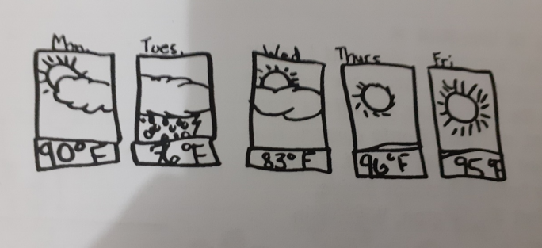
Gambar Macam-Macam Awan
Permainan /Pembelajaran Sains Sesuai Usia Perkembangan 4-6 tahun
kegiatan 1 dapat dilihat sebagai berikut :
Kegiatan 1: Panca inderaku
Tujuan (goal/ kompetensi dasar):’
- Kognitif : mengembangkan kemampuan berbahasa, berpikir logis dan matematis.
- Sosial emosional : mengembangkan perilaku sosial, pengendalian diri dan interaksi.
- Fisik : mengembangkan motorik halus dan motorik kasar.
Materi : Kegunaan panca indera pendengaran (Telinga)
Media/ bahan :
- Botol aqua 1,5 L sebanyak 4 buah
- Kaleng roti atau bambu berbagai ukuran
- Tali tambang
- Kaleng susu kental manis
- Karton
- Spidol
| No. | Tahap Pembelajaran (sintaks) | Kegiatan |
Multi- sensori |
Waktu | Aspek Perkembangan | |||
| Aktifitas guru | Aktifitas anak | Kognitif | Sosialemosional | Fisik | ||||
| 1. |
Pra Pendahuluan 1.1 Persiapan media pembelajaran 1.2.Persiapan pengaturan sampah |
Menyiapkan 3 macam media belajar :
|
|
120 menit | Menerima tanggung jawab | |||
| 2. |
Pendahuluan 2.1.Pembukaan dengan membaca judul kegiatan bersama
2..1. Gerak dan lagu
2.3.Penjelasan singkat kegiatan
2.4. Pengaturan posisi |
Memperlihatkan spanduk judul kegiatan Membaca judul kegiatan Telingaku Melakukan gerak dan lagu
-Memberikan penjelasan singkat kegiatan sambil memperlihatkan bahan dan peralatan yang akan digunakan hari itu. -Bertanya -Menjawab pertanyaan
-Meminta anak berdiri di depan meja yang menyediakan peralatan untuk bermain peran kegunaan telinga . meminta anak mengambil nomor antrian di kotak yang disediakan |
Memperhati kan guru -Membaca judul kegiatan bersama-sama
-Melakukan gerak dan lagu (kinsetetik) Memperhatikan guru
-Menjawab -Bertanya - Berdiri di depan meja yang menjadi minat -Mengambil nomor antrian |
Visual Dan auditori
|
15 menit |
Kemampuan keaksaran
Menerima perintah |
Mengikuti aturan yang berlaku
Mengikuti autran
Mengikuti antrian |
Melompat |
| 3. |
Pembelajaran 3.1. Aktivitas pembelajaran inti
3.2 Tanya jawab
3.3Pengaturan sampah |
-Mengamati dan membimbing anak yang bertanya
-Mengajukan pertanyaan : apa yang dimainkan dan apa yang didengar
-Membereskan peralatan dan membuang sampah ke tong samaph |
Memainkan peran yang diinginkan dengan pelatan yang disediakan
Menjawab pertanyaan guru
Membereskan peralatan dan membuang sampah ke tong sampah atau kantong kresek |
Auditori dan auditory, dan somato sensory |
60 menit |
Kemampuan mengamati dan membandingkan Memahami konsep panca indera (kegunaan telinga) |
Bekerjasama dengan teman
Bertanggung jawab |
|
| 4. |
Penutup 4.1.Lingkaran penampilan
4.2.Penguatan pemahaman
4.4 display karya
4.3. Gerak dan lagu
|
-Bersama anak duduk melingkar -Mendengarkan cerita pengalaman anak
-Meminta anak mengambil kertas kerja ditempat yang disediakan sesuai minatnya (menebalkan gambar atau menebalkan tulisan TELINGA)
-Menjelaskan apa yang harus dilakukan anak dengan kertas kerja dengan memberikan contoh.
-memita anak memajangkan kertas kerja di papan display -Melakukan gerak dan lagu
|
-Duduk melingkar bersama guru -Masing–masing anak menceritakan apa yang dirasakan saat kegiatan secara bergiliran
-Anak mengambil kertas kerja -Mendengarkan penjelasan Guru -menebalkan tulisan atau gambar TELINGA
-Mengumpulkan kertas kerja di meja bu guru,. -memajang kertas kerja di papan display
-Melakukan gerak dan lagu |
Auditori dan auditory
somatosensory |
45 menit |
Menunujkkan kemampu an bicara
Melaksnakan 2-3 perintah |
Berdiskusi untuk menyelesaian masalah
Mengikuti kegia tan rutin
Menunjukkan percaya diri Menunjukkan percaya diri |
Menghubungkan garisputus-puts |
Contoh Sintax Kegiatan 2. Jalan-Jalan Pagi
Tujuan (goal/ kompetensi dasar):
- Kognitif : Berpikir logis dan matematis serta mengembangkan kemampuan berbahasa
- Sosial emosional : Mengembangkan perilaku sosial, pengendalian diri dan interaksi
- Fisik : Mengembangkan kesehatan dan keamanan serta motorik kasar
Materi : Kegunaan panca indera rabaan (Kulit)
Media/ bahan :
- Handuk kecil dan kantong kresek
- Lem’ dan kertas
| No. | Tahap Pembelajaran (sintaks) | Kegiatan |
Multi-sensori |
Waktu | Aspek Perkembangan | |||
| Aktifitas guru | Aktifitas anak | Kognitif | Sosial-emosional | Fisik | ||||
| 1. |
Pra Pendahuluan 1.1.Persiapan media pembelajaran
1.2. Persiapan pengaturan sampah
|
-Meyediakan media lem dan kertas hvs bekas -Membuat tulisan dan gambar Jalan Pagi untuk mendengar di kertas kantong semen. -Menyediakan kantong kresek sampah kering |
Meyiapkan handuk kecil
\
Menyiapkan kantong kresek |
100 menit | Menerima tanggung jawab | |||
| 2. |
Pendahuluan 2.1Pembukaan dengan membaca judul kegiatan bersama
2..1. Gerak dan lagu
2.3. Penjelasan singkat kegiatan
2.4.Pengaturan posisi |
Memperlihatkan spanduk judul kegiatan -Membaca judul kegiatan Jalan Pagi
-Melakukan gerak dan lagu
-Memberikan penjelasan singkat kegiatan sambil memperlihatkan bahan dan peralatan yang akan digunakan hari itu. -Bertanya -Menjawab pertanyaan - Meminta anak berbaris rapi , berjalan ke taman dekat sekolah
|
Memperhatikan guru. -Membaca judul kegiatan bersama-sama. -Melakukan gerak dan lagu Memperhatikan guru -Menjawab pertanyaan -Bertanya
-Berbaris rapi , berjalan ke taman dekat sekolah
|
Visual dan auditori | 15 menit |
Menunu jukkan keaksaraan
|
Mengikuti kegiatan rutin
|
Kesadaran keamanan luar ruangan |
| 3. |
Pembelajaran 3.1. Aktivitas pembelajaran inti
3.2 Tanya jawab
3.3.Pengaturan Sampah |
-Meminta anak mengambil daun di rumput kemudian memasukkan ke kantong kresek masing-masing
-Mengajukan pertanyaan : apa yang dirasakan (panas atau dingin)
Mengajukan pertanyaan perbedaan daun yang mangga dan daun pepaya Meminta anak mencium bau daun segar
-Membereskna peralatan -Meminta anak berbaris dan kembali ke TK |
-Mengambil bermacam daun yang berserakkan di rumput. Menyerah kan kantong kresek yang berisi daun kering kepada guru dengan melompat satu kaki
Meletakkan kresek pada kantong yang disediakan guru - mencium bau daun kemudian mengelompokkan daun berdasarkan jenis daunnya, misalnya daun mangga dengan daun pepeya. -Menjawab pertanyaan guru secara bergiliran -Berbaris dan kembali ke TK |
60 menit
somatosensory
Visual dan auditori
Olfactory, visual, somatosensory |
Kemam puan mengamati
Kemam puan mem bandingkan
Kemampuan Mengelompokkan
|
Antri menunggu giliran
|
Melompat satu kaki
Kesadaran keamanan luar ruangan
Menerima tanggungjawab |
|
| 4. |
Penutup 4.1.Lingkaran penampilan
4.2.Penguatan pemahaman
4.3. display karya
4.4.Gerak dan lagu |
-Bersama anak duduk melingkar -Mendengarkan cerita pengalaman anak
-Meminta anak mengambil kertas kerja ditempat yang disediakan sesuai minatnya (memberi tanda pada gambar yang menunujkkan pagi hari) -Menjelaskan apa yang harus dilakukan anak dengan kertas kerja dengan memberikan contoh.
-Meminta anak memajangkan kertas kerja di papan display
-Melakukan gerak dan lagu |
-Duduk melingkar bersama guru - Masing –masing anak menceritakan apa yang dirasakan saat kegiatan secara bergiliran
-Anak mengambil kertas kerja
Mendengarkan penjelasan Guru -memberi tanda pada gambar yang menunujkkan pagi hari. Mengumpulkan kertas kerja di meja bu guru. Memajang kan kertas kerja di papan display -Melakukan gerak dan lagu |
Visual dan auditori
|
45 menit |
Konsep panca indera visual dan rabaan
Memahami Konsep waktu pagi hari
|
Mengikuti kegiatan rutin
Percaya diri
Percaya diri |
Menggunakan peralatan tulis
|
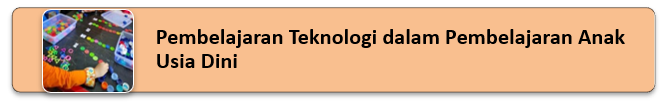
Ada beberapa cara penggunaan teknologi untuk meningkatkan pengalaman pendidikan bagi anak usia dini menurut Morrison (2012) yaitu:
- Berceritalah. Membaca dan menulis lebih efektif, jika diajarkan bersamaan. Untuk membuat ilustrasi, gunakan program pewarnaan sederhana, gambarlah dan pindai gambar itu ke computer atau laptop atau bisa juga diperoleh dari sumber online. Anak-anak dapat menggunakan gambar untuk mengilustrasikan atau membuat cerita mereka sendiri. Mintalah anak-anak mencatat cerita itu dalam bentuk gambar-gambar yang menarik. Mereka suka mendengarkan cerita dan mereka berulang kali menceritakan cerita mereka.
- Ciptakan buku memori. Gunakan kamera digital atau kamera handphone untuk mencatat aktivitas khusus perjalanan lapangan untuk membuat buku memori. Poster anak-anak dapat berbagi kenangan dengan mendiktekan atau menerbitkan, gambar ilusi, dan membuat rekaman. Anak-anak dapat bekerja bersama menciptakan slideshow yang meliput peristiwa itu. Kemudian, buku memori dapat dilihat secara online atau dicetak sebagai buku. Melihat kembali foto menguatkan pembelajaran yang terkait dengan kejadian itu. Sementara sebagai kegiatan kelompok, buku memori mengizinkan anak-anak berbicara dengan cara yang individual.
- Dokumentasikan dan pajanglah proyek atau tugas melalui foto. Teknologi dapat digunakan untuk mendokumentasikan prestasi anak-anak. Dengan kamera digital atau kamera handphone, potret anak-anak yang sedang melakukan sesuatu apa saja dari mengerjakan berbagai tugas. Pajanglah gambar di seluruh sekolah, di buletin, di situs web kelas, dan di buku tahunan sekolah. Saat anak-anak melihat gambar mereka, mereka bangga dan merasa memiliki siapa mereka dan setuju mereka. Lakukan eksplorasi. Gunakan file gambar dari kamera digital atau Web. Lakukan zoom in untuk memperbesar fitur yang tidak langsung dapat dilihat oleh anak-anak. Ajak anak-anak membuat koleksi gambar digital komunitas
- Lakukan eksplorasi. Gunakan file gambar dari kamera digital untk mmeperbesar benda-beda yang terlihat kecil dengan fitur zoom. Koleksi gambar digital museum atau tempat yang disukai seperti virtual tour. Pengalaman praktis menghasilkan kemelekan huruf melalui percakapan dan peluang memelajari kosakata baru. Jika komputer tersedia untuk digunakan anak-anak, anda dapat memandu mereka melalui situs Web yang berorientasi anak yang menarik dengan menggunakan TrackStar (http: // trackstar 4teaching.org). Dengan alat online ini, Anda dapat dengan mudah membuat sendiri lagu atau menggunakan salah satu dari lagu yang telah dikembangkan oleh guru lain
- Mendaftar dan membandingkan. Koleksilah dan susunlah segala sesuatu yang menarik bagi anak-anak dalam bentuk grafik. Pengalaman ini akan membantu anak-anak memvisualisasikan dan memahami informasi cara baru. Sebagai alternatif, Anda dapat menggunakan magnet yang dipersonalisasi dengan nama anak-anak di papan tulis atau papan tulis untuk mengilustrasikan bahwa anak datang dengan baju yang berbeda.
- Menggunakan Komputer
- Pengalaman sukses dengan komputer bergantung pada bagaimana komputer diintegrasikan ke dalam kelas. Pengaturan Area Komputer, dan perangkat lunak serta situs web yang disediakan, memengaruhi apakah pengalaman anak-anak berhasil atau membuat frustrasi, dan apakah komputer digunakan secara tepat atau tidak tepat. Jelas, lokasi, dan koneksi Internet akan memengaruhi penempatan komputer. Jika mungkin, cari area Komputer anda di dekat atau di dalam area Perpustakaan. Banyak dari apa yang akan dilakukan anak-anak dengan pemecahan masalah komputer, komunikasi, dan pengumpulan informasi adalah tugas-tugas yang secara alami dilakukan anak-anak di area perpustakaan. Jika anda memiliki komputer tambahan, pertimbangkan untuk meletakkannya di area mainan dan game, tempat anak-anak dapat menggunakan perangkat lunak pola dan klasifikasi untuk memperkuat aktivitas yang mereka lakukan dengan puzzle, mainan, dan permainan, atau di Discovery Area di mana anak-anak dapat menggunakan komputer untuk temukan jawaban untuk pertanyaan tentang eksplorasi mereka atau untuk melihat gambar yang membantu mereka memahami apa yang mereka lihat.
- Guru harus memperhatikan waktu interaksi anak dengan media teknologi karena termasuk banyak waktu untuk bermain di luar ruangan dan kegiatan musik dan gerakan. Anak-anak prasekolah akan berada di depan computer yang cukup lama diduga mengalami masalah kesehatan. Perlakukan interaksi dengan Komputer seperti yang Anda lakukan setiap bidang minat lainnya. Anak-anak perlu waktu untuk mengeksplorasi, untuk merefleksikan tindakan mereka, dan untuk merasa tertantang pengalaman dan menemukan kenyamanan dalam keluarga atau kenyamanan di TK. Anak-anak yang terbiasa di depan komputer dan mendapatkan kepuasan agar dapat membantu teman-teman mereka belajar menggunakan apa yang harus dipelihara. Tetapi juga harus diingat waktu anak terbatas interaksi dengan media digital berlayar ini, jadi batasi waktu di area ini.
- Gunakan penilaian anda untuk mengukur kreativitas anak dalam membuat sesuatu dengan menggunakan media digital dan bagaimana mereka menyusun puzzle atau megekplorasi sesuatu dengan menggunakan media Komputer ini. Jika Orang tua memberi tahu saya bahwa anak-anak mereka lebih tahu tentang komputer/media digital lainnya daripada mereka, “Bagaimana saya bisa melibatkan keluarga sehingga mereka mendapatkan keterampilan juga”? Banyak program mensponsori acara-acara komputer/media digital keluarga, dimana keluarga diundang untuk bergabung dengan anak-anak mereka dalam belajar tentang teknologi. Mungkin tidak ada lingkungan belajar yang lebih baik bagi anak-anak selain duduk berdampingan di depan komputer bersama orang tua mereka dan mengeksplorasi bersama bagaimana komputer, perangkat lunak, dan pekerjaan yang meggunakan Internet dapat digunakan secara tepat dan nyaman.